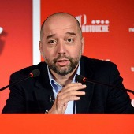
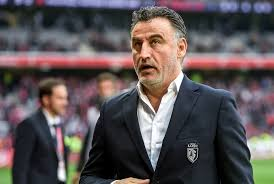
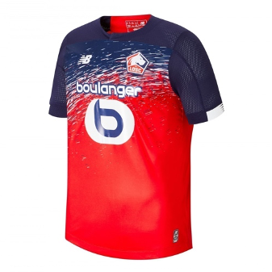
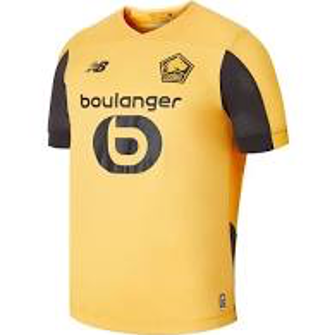

1. Histoire du Club
Le LOSC est créé en 1944 suite à la fusion de deux clubs rivaux : l'Olympique lillois et le Sporting Club fivois. Le LOSC est privatisé à partir de 1999.
Le LOSC est racheté en 2017 par Gérard Lopez. La même année, Christophe Galtier devient l'entraineur de Lille. Le rachat du club marque aussi l'arrivée de Luis Campos, le nouveau directeur sportif.
Le Lille Olympique Sporting Club évolue depuis 2012 au Stade Pierre Mauroy après avoir joué pendant huit années au Stadium Lille Métropole
2. Comité de direction

Gérard Lopez, Président du club
Luis Campos, Directeur sportif

Christophe Galtier, Manager
3. Maillots

Maillot Domicile

Maillot Extérieur